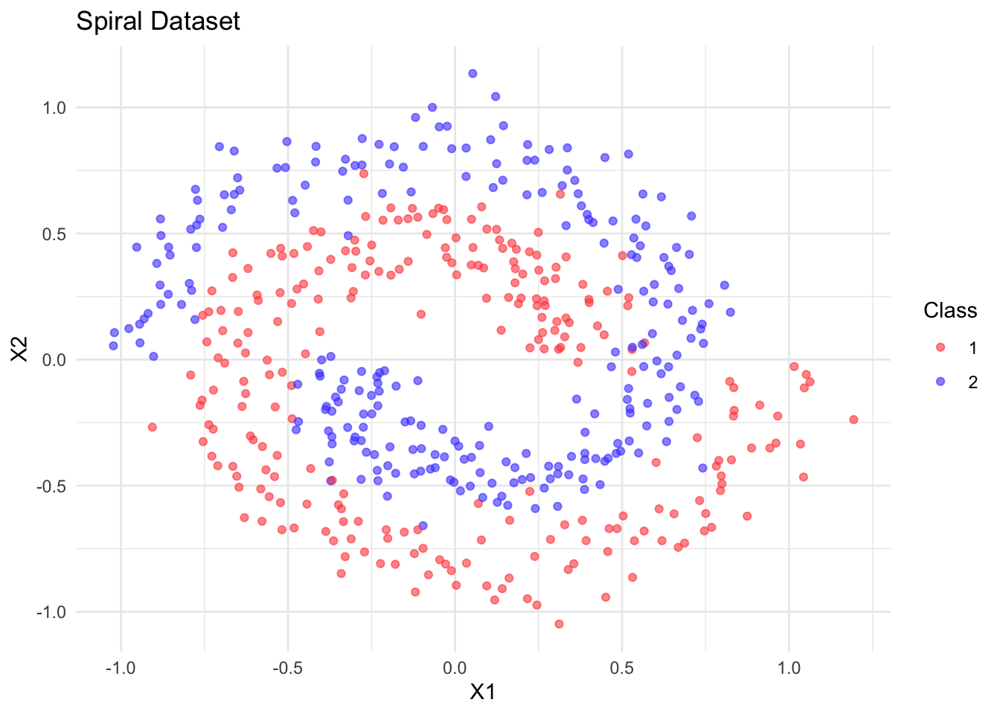
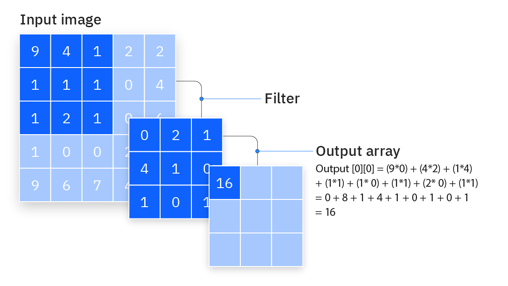
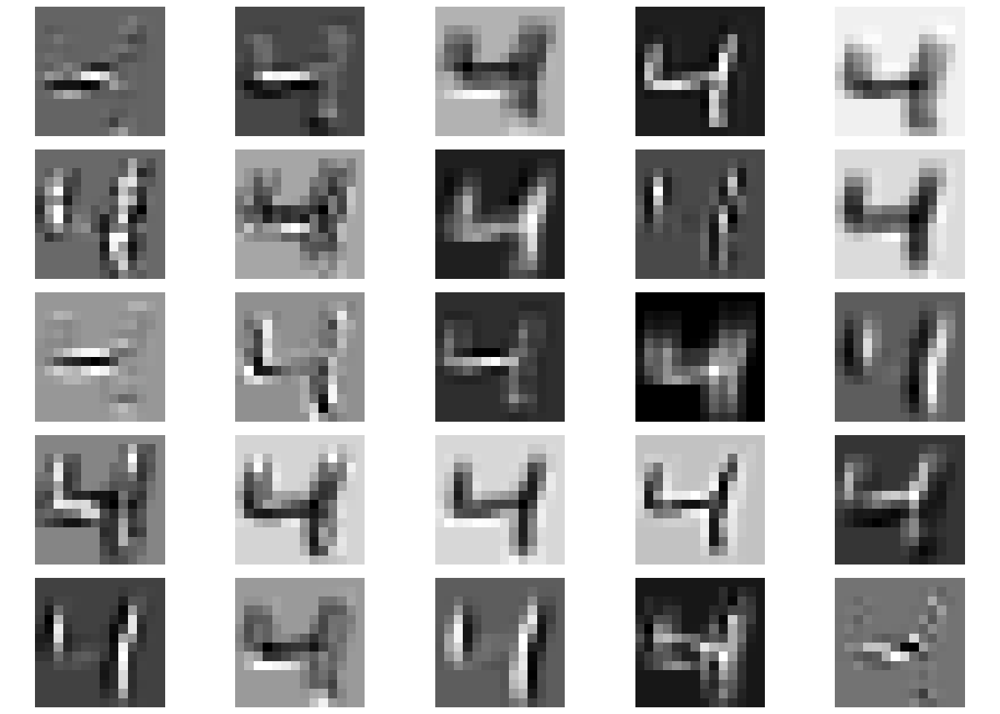
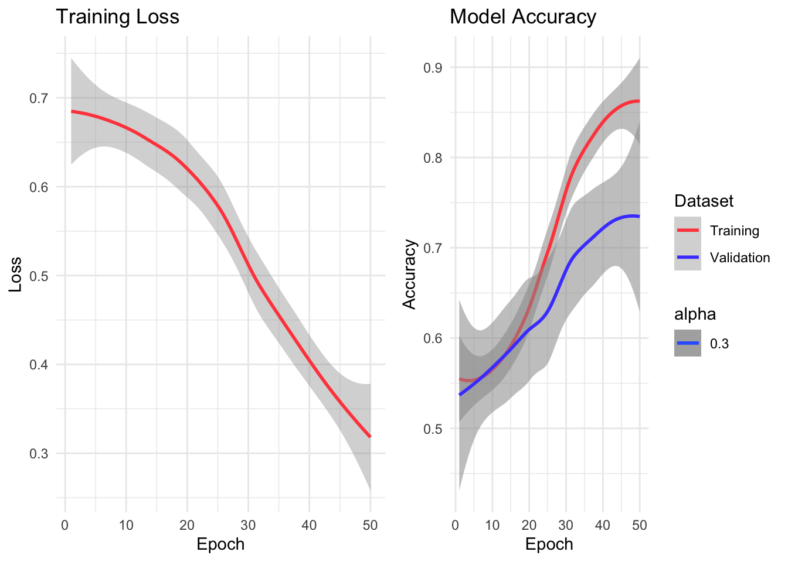
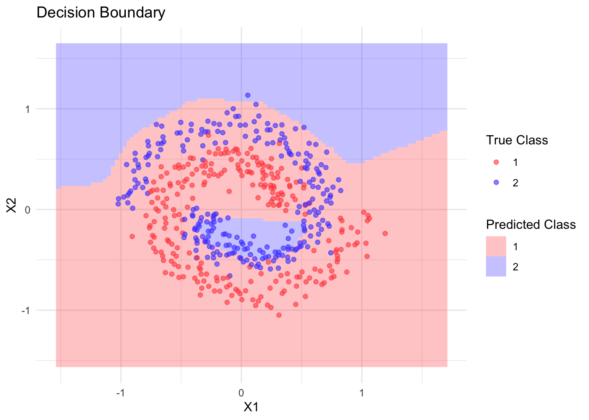

In the previous notebook, we explored how to use torch’s autograd system to fit simple linear models. We manually:
Managed the weights.
Defined the forward path for the model.
Computed gradients and updated parameters using a simple update rule: a$sub_(lr * a$grad)
For more complex models, this approach becomes cumbersome. torch offers several high-level abstractions that simplify building and training neural networks:
nn_module: A class to organize model parameters and define the forward pass.
dataset and dataloader: Classes to handle data loading and batching, replacing our manual data handling.
optim: Classes that implement various optimization algorithms, replacing our manual gradient updates.
Let’s explore how these components work together by building a neural network to classify spiral data. Note that we only briefly touch on optimizers here and dedicate an additional notebook to them.
Neural Network Architecture with nn_module
The nn_module class serves several purposes:
Acts as a container for learnable parameters.
Provides train/eval modes, which are essential for layers like dropout and batch normalization.
Defines the forward pass of the model.
Torch offers many common neural network modules out of the box. For example, the simple linear model we created earlier (\(\hat{y} = ax + b\)) can be constructed using the built-in nn_linear module:
Note that while nn_modules behave like functions, they also maintain a state, primarily their parameter weights.
Implementing a custom nn_module is straightforward and requires defining two key methods:
initialize: This constructor runs when the model is created. It defines the layers and their dimensions.
forward: This method defines how data flows through your network: it specifies the actual computation path from input to output.
Let’s implement a simple linear regression module ourselves.
nn_simple_linear <-nn_module("nn_simple_linear",initialize =function() {# `self` refers to the object itself self$a =nn_parameter(torch_randn(1), requires_grad =TRUE) self$b =nn_parameter(torch_randn(1), requires_grad =TRUE) },forward =function(x) { self$a * x + self$b })
Note that nn_simple_linear is not an nn_module itself but an nn_module_generator. To create the nn_module, we call it, which invokes the $initialize() method defined above:
Furthermore, note that we wrapped the trainable tensors in nn_parameter(), ensuring they are included in the $parameters. Only those weights that are part of the network’s parameters and have $requires_grad set to TRUE will later be updated by the optimizer.
Besides parameters, neural networks can also have buffers (nn_buffer). Buffers are tensors that are part of the model’s state but don’t receive gradients during backpropagation.
Additionally, an nn_module operates in either a train or eval state:
simple_linear$train()simple_linear$training
[1] TRUE
simple_linear$eval()simple_linear$training
[1] FALSE
Some nn_modules (such as batch normalization) behave differently depending on this mode, so it’s essential to ensure that the network is in the correct mode during the training process.
Another important method of a network is $state_dict(), which returns the network’s parameters and buffers.
The state dict can, for example, be used to save the network’s weights for later use. Note that, in general, you cannot simply save and load torch objects using saveRDS and readRDS:
Besides adding parameters and buffers to the network’s state dict by registering nn_parameters and nn_buffers in the module’s $initialize() method, you can also register other nn_modules.
The World is Not Linear
While we have so far explained much of torch’s functionality using simple linear networks, the main idea of deep learning is to model complex, non-linear relationships. Below, we generate some non-linear synthetic spiral data for binary classification:
library(torch)library(ggplot2)library(mlbench)# Generate spiral dataset.seed(123)n <-500spiral <-mlbench.spirals(n, sd =0.1)# Convert to data framespiral_data <-data.frame(x1 = spiral$x[,1],x2 = spiral$x[,2],label =as.factor(spiral$classes))
The data looks like this:

While linear models are often useful and have helped us explain the torch API, they are limited in capturing the complex, non-linear patterns commonly present in real-world data, especially unstructured types like images, text, audio, and video. Deep neural networks typically consist of many different layers (hence the name “deep”) and combine linear and non-linear layers with various other components, allowing them to represent highly complex functions. Traditional machine learning and statistics rely on manual feature engineering to transform raw inputs, whereas deep neural networks have revolutionized this process by automatically learning hierarchical features directly from the data.
One challenging problem is defining a neural network architecture for a given task. While neural networks with a single hidden layer can theoretically approximate any continuous function, the practical challenge lies in finding these solutions efficiently. This is where architectural choices and their associated inductive biases become crucial.
An inductive bias represents the set of assumptions that a learning algorithm uses to predict outputs for inputs it hasn’t encountered during training. These biases help the model generalize beyond its training data by favoring certain solutions over others.
Some examples of inductive biases in different neural network architectures:
Convolutional Neural Networks (CNNs)
The central component of a CNN is the convolutional layer:

Convolutional Layer
CNNs encode several strong inductive biases about visual data:
Locality: Nearby pixels are more likely to be related than distant ones.
Translation Invariance: Features should be detected regardless of their position.
Hierarchical Composition: Complex patterns are built from simpler ones.
These biases make CNNs particularly effective for image-related tasks because they align with our understanding of how visual information is structured.
To create a convolutional layer for a 2D image, we can use the nn_conv2d function.
Because we have encoded more information about the structural relationship between the input tensor and the output tensor (the same filter is applied to the entire image), the convolutional layer has far fewer parameters than a fully connected layer.
Question 1: How many parameters does a fully connected layer with the same number of inputs and outputs have?
Answer
The input has \(28 \times 28 = 784\) pixels and the output as well. The weights of the fully connected layer are a \(784 \times 784\) matrix and the bias also has 784 elements, so the number of parameters is \(784 \times 784 + 784 = 615440\), much more than our simple convolutional kernel.
Below, we show the output of the first convolutional layer from a (trained) ResNet18 model.

Transformers
While there are many variations of transformer architectures, the main idea is the (self-)attention mechanism:
Transformer architectures, which power language models like GPT-4 and are commonly used in natural language processing, have different inductive biases:
Non-locality: Any token can directly interact with any other token (this is why training transformers is so expensive).
Position Awareness: Sequential order matters but is explicitly encoded.
Attention-based Relationships: Important connections between elements are learned dynamically.
These biases make Transformers well-suited for tasks where long-range dependencies are important, such as understanding language or analyzing sequences.
In torch, the nn_multihead_attention module implements the attention mechanism. We demonstrate how to use it with random data, a single output head, and self-attention for simplicity.
library(torch)library(ggplot2)library(tidyr)library(zeallot)embed_dim <-16seq_length <-10batch_size <-1# Initialize multihead attention moduleattention <-nn_multihead_attention(embed_dim = embed_dim,num_heads =1)# Create random input embeddinginput_embedding <-torch_randn(seq_length, batch_size, embed_dim)# For self-attention, the query, key, and value are the samequery <- key <- value <- input_embedding# Forward pass, keep the attention weights, not only new embeddingsoutput <-attention(query, key, value, need_weights =TRUE)attn_output <- output[[1L]]attn_weights <- output[[2L]]
Below, we print the attention weights between the random embeddings and weights.
The different layers in a Multi-Layer Perceptron (MLP) consist mainly of an affine-linear transformation followed by a non-linear function, such as a ReLU activation function:
Our simple multi-layer perceptron has minimal inductive biases:
Continuity: Similar inputs should produce similar outputs.
Hierarchical Feature Learning: Each layer builds increasingly abstract representations.
This flexibility makes MLPs general-purpose learners, but they may require more data or parameters to learn patterns that specialized architectures can discover more efficiently.
For our problem, we will use a simple MLP with three hidden layers:
Instead of creating an nn_relu() during network initialization, we could have used the nnf_relu function directly in the forward pass. This is possible for activation functions as they have no trainable weights.
In general, nn_ functions create module instances that can maintain state (like trainable weights or running statistics), while nnf_ functions provide the same operations as pure functions without any state.
Furthermore, for simple sequential networks, we could have used nn_sequential to define the network instead of nn_module. This allows you to chain layers together in a linear fashion without explicitly defining the forward pass.
The image below visualizes the general structure of this network:
Source: https://tikz.net/neural_networks/
We can create a concrete network by calling the resulting nn_module_generator and specifying the required parameters.
# Create model instancemodel <-nn_spiral_net(input_size =2,hidden_size =64,output_size =2)print(model)
At this point, let’s briefly discuss the output—the ‘head’ of the network, as well as loss functions.
Classification
The output dimension of a classification network is usually the number of classes, which is 2 in our case. However, the output is not probabilities but logit scores. To convert a vector of scores to probabilities, we apply the softmax function:
The most commonly used loss function is cross-entropy. For a true probability vector \(p\) and a predicted probability vector \(q\), the cross-entropy is defined as:
\[ \text{CE}(p, q) = - \sum_i p_i \log(q_i) \]
Note that when the true probability \(p\) is 1 for the true class and 0 for all other classes, the cross-entropy simplifies to:
\[ \text{CE}(p, q) = - \log(q_{y}) \]
where \(y\) is the true class and \(q_y\) is its predicted probability.
To calculate the cross-entropy loss, we need to pass the predicted scores and the true class indices to the loss function. The classes should be labeled from 1 to C for a total of C classes.
For regression tasks, the final layer is almost always a simple linear layer with a single output. We can construct a version of the spiral network for regression by changing the final layer to a linear layer with a single output:
Finally, it’s important to note that there is nothing inherently ‘magical’ about nn_modules. We could have equally implemented the same network manually ourselves:
The dataset and dataloader classes address separate concerns:
dataset: Handles data storage and access to individual samples. The methods are:
.getitem(): Returns a single sample, regardless of the retrieval method (e.g., reading from disk or fetching from a database).
.getbatch() (optional): Returns a full batch.
.length(): Returns the dataset size.
dataloader: Given a dataset, handles batching, shuffling, and parallel loading.
We will start by creating a custom dataset class for the spiral problem. In its $initialize() method, it expects a data.frame with columns "x1", "x2", and "label". We then convert these to tensors and store them in the object.
Below, we implement .getitem(), but we could also implement .getbatch(), which retrieves a vector of indices. Note that implementing .getbatch() can offer performance benefits.
For the spiral problem, we could have also used the torch::tensor_dataset class.
Now that we have defined the dataset class generator, let’s create training and validation datasets:
Training and validation datasets serve different purposes:
Training data is used to update the model’s parameters and learn patterns.
Validation data helps evaluate how well the model generalizes to unseen data, detect overfitting, and guide model selection decisions.
Validation in deep learning is crucial for:
Detecting Overfitting: If training loss decreases but validation loss increases, the model is likely overfitting to the training data.
Model Selection: We can use validation performance to choose the best model architecture and hyperparameters.
Early Stopping: We can halt training when validation performance stops improving to prevent overfitting.
The validation set acts as a proxy for unseen data, providing an estimate of how well our model will generalize to new examples. It’s important to keep this data separate from training to obtain an unbiased evaluation of model performance.
# Split data into train and validation setstrain_ids <-sample(1:500, 400)train_data <- spiral_data[train_ids,]valid_data <- spiral_data[-train_ids,]# Create datasetstrain_dataset <-spiral_dataset(train_data)valid_dataset <-spiral_dataset(valid_data)
We can access individual elements via the $.getitem() method:
It is also possible to manually iterate over the batches by first creating an iterator using torch::dataloader_make_iter() and then calling dataloader_next() until NULL is returned, indicating that the iterator is exhausted.
iter <-dataloader_make_iter(train_loader)n_batches <-0while (!is.null(batch <<-dataloader_next(iter))) { n_batches <- n_batches +1}print(n_batches)
[1] 7
Training Loop
To train our MLP on the data, we need to specify how the gradients will update the network parameters, which is the role of the optimizer. While we’ll cover more complex optimizers in the next section, we’ll use a vanilla SGD optimizer with a learning rate of 0.3 and pass it the parameters of the model we wish to optimize.
optimizer <-optim_sgd(model$parameters, lr =0.3)
For the training loop, we only need methods from the optimizer class:
The $step() method updates the weights based on the gradients and the optimizer configuration (e.g., the learning rate).
The $zero_grad() method sets the gradients of all parameters handled by the optimizer to 0.
Now, let’s put everything together:
# Training settingsn_epochs <-50device <-if (cuda_is_available()) "cuda"else"cpu"# Move model to devicemodel$to(device = device)# Training loophistory <-list(loss =numeric(), train_acc =numeric(), valid_acc =numeric())for(epoch inseq_len(n_epochs)) { model$train() # Set to training mode# Training loop train_losses <-numeric() train_accs <-numeric() coro::loop(for(batch in train_loader) {# Move batch to device x <- batch$x$to(device = device) y <- batch$y$to(device = device)# Forward pass output <-model(x) loss <-nnf_cross_entropy(output, y)# Backward pass optimizer$zero_grad() loss$backward() param =as_array(model$parameters[[1]]) optimizer$step()# Store training losses train_losses <-c(train_losses, loss$item()) train_accs <-c(train_accs, mean(as_array(output$argmax(dim =2) == y))) }) history$loss <-c(history$loss, mean(train_losses)) history$train_acc <-c(history$train_acc, mean(train_accs))# Validation loop# Set model to evaluation mode model$eval() valid_accs <-numeric() coro::loop(for(batch in valid_loader) { x <- batch$x$to(device = device) y <- batch$y$to(device = device) output <-with_no_grad(model(x)) valid_acc <-as_array(output$argmax(dim =2) == y) valid_accs =c(valid_accs, mean(valid_acc)) }) history$valid_acc <-c(history$valid_acc, mean(valid_accs))}
The decision boundary plot shows how our neural network learned to separate the spiral classes, demonstrating its ability to learn non-linear patterns that a simple linear model couldn’t capture.

We can also visualize the predictions of our final network:

This example demonstrates how Torch’s high-level components work together to build and train neural networks:
nn_module manages our parameters and network architecture.
The optimizer handles parameter updates.
The dataset and dataloader classes work in tandem for data loading.
The training loop integrates everything seamlessly.
 Source: https://medium.com/
Source: https://medium.com/